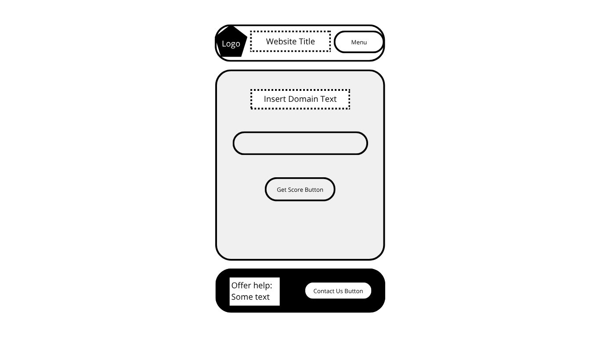
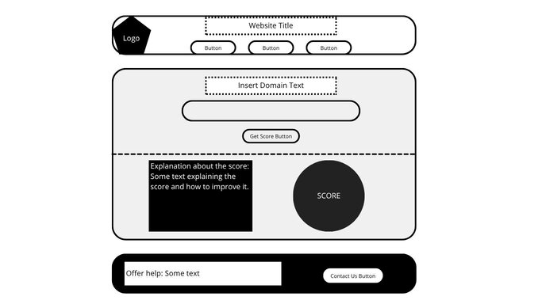

Site Name
Domain Security Analyzer
This name represents a web site were any company can check the security of their domains.
Site Purpose
The site mainly provides a tool to evaluate the security of domain's configuration through a DMARC-based scoring. Secondarly, it offers educational resources on DMARC, SPF, and DKIM. Lastly, it provides a history of previously analyzed domains, and guidance toward solutions for improving email security.
Scenarios
• How secure is my domain?
• What can I do to improve my domain's security?
Color Schema
Primary Blue (#2F80ED)
Main header background, navigation bar, buttons, and prominent sections like the domain analysis results.
It is also reflected in the logo shield to maintain brand consistency.
Accent Green (#27AE60)
Will appear in the DMARC score (for good score), checkmarks, and links that guide toward solutions.
It's a positive color and appears in the logo as a checkmark.
Neutral Dark Gray (#1F2937)
For primary text such as headings.
It looks professional and helps with readability.
Typography
Primary Font: “Montserrat” (Sans-serif)
Secondary Font: “Roboto” (Sans-serif)
Wireframes
Mobile View

Desktop View
